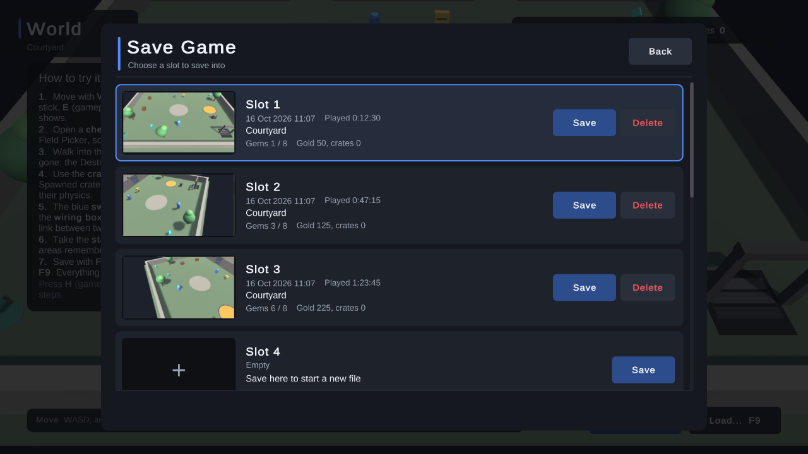
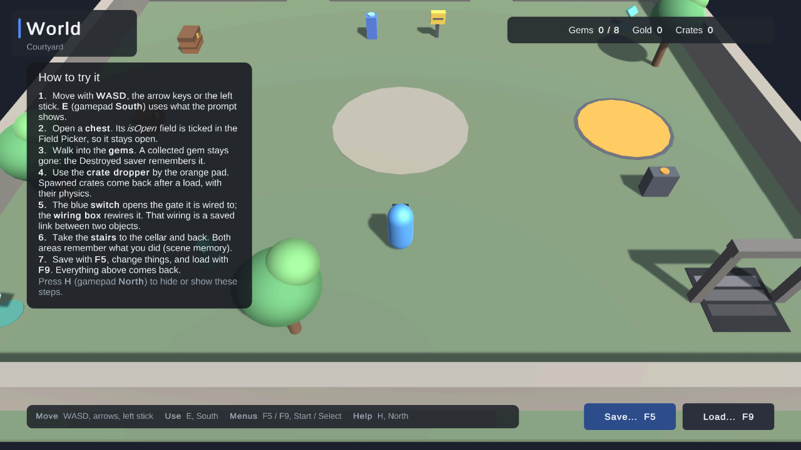

All In One Save Kit: Quick Start
Version 1.0 · Rare Geometry
Five minutes from import to an object that remembers its state, without writing code. Each step ends with a Checkpoint that says what you should see. The Guide has the details behind every step.
You need Unity 2022.3 LTS or newer on Windows 10 or 11 (Unity versions and platforms), and a scene with something that changes during play: a door, a chest, a pickup, or just a cube.
1. Import the kit #
- Open Window → Package Manager, choose My Assets, find All In One Save Kit, then click Download and Import. Leave everything ticked and click Import.
- When Unity has finished compiling, the Start window opens by itself. To open it again, choose Tools → All In One Save Kit → Start.
If the menu and the Start window do not appear, Unity UI or TextMesh Pro is missing from the project: the Console says which, and Tools → All In One Save Kit → Required Packages shows how to install it (If the kit's menus are missing after import).
Checkpoint: the Start window is open and says "Before your first save".
2. Fix what the status strip shows #
Open the scene you want to test in. The strip at the top of the Start window checks five things; click the button under each one that is not green yet:
| Check | Click | What it does |
|---|---|---|
| No settings yet | Create | Makes the kit's settings in Assets/AllInOneSaveKitData, outside the kit's folder, with the recommended defaults |
| Scene not saved | Save scene | A load can only re-open a scene that is saved to a file |
| Scene not in Build Settings | Add | A build only loads scenes on that list |
| No hotkeys | Add | Puts the save menu and the F5 / F9 test hotkeys in the scene. The keys work in the Editor only. |
| No menu text yet | Import | Adds TextMesh Pro's essential resources (a font and its settings), which the menu's and the demos' text needs. Without them the menu has no text. |
Edit → Undo takes any of them back, except Import. You need no startup code: the kit starts by itself when you press Play.
Checkpoint: all five dots are green, and the strip says "Ready".
3. Make an object remember its state #
- In the Start window, click Make objects remember their state.
- Select your object in the Hierarchy (hold Ctrl to pick several), then click Make the selected objects remember their state.
- Select the object. The top of its Saveable says in one sentence what it saves, such as "Saves position, active state and whether it was destroyed." To save a value from one of your scripts, such as Is Open or Gold, tick it under Values from your scripts.
- Save the scene (Ctrl+S).
Set starting values in the Inspector, in the field's declaration or in Awake, never in Start: the kit restores saved values before Start runs. If a script's Start may reset a ticked value, the Saveable warns you (Load order).
Checkpoint: the Saveable's sentence names what you want saved.
4. Try it #
- Press Play.
- Press F5 and click Save on the Slot 1 card. Press F5 again to close the menu.
- Change something: move the object in the Scene view, or change a ticked value in the Inspector.
- Press F9, click Load on Slot 1, then Load again to confirm.

F5 opens the Save menu. Each used slot shows a picture, the date and the playtime.
Checkpoint: the object is back as it was when you saved, and a note at the top of the Game view says what happened, such as "Loaded Slot 1: 1 restored". If something was skipped, the note says what and why; click it to see the whole report.
That's it: your game saves and loads.
5. Make it yours #
Click Make it yours in the Start window (or Tools → All In One Save Kit → Menu Style). Click Use on one of six styles (Dark, Light, Fantasy, Sci-fi, Cozy or Minimal), then change any colour, switch the list to a grid, hide details you do not need, or rewrite any word. A live preview shows each change, and Edit → Undo takes it back. Your changes go into your own copy in Assets/AllInOneSaveKitData/Menu, never into the kit (Make it yours).
Checkpoint: press Play and F9: the Load menu has your style.
If something did not come back #
| What you see | What to do |
|---|---|
| F5 and F9 do nothing | The status strip shows No hotkeys or Hotkeys off: click its button. |
| The menu says "Saving is not available yet." | There is no settings asset: click Create in the Start window. (SK005) |
| The note says "1 skipped ... not found (SK130)" | The saved object is no longer in the scene, or has a new id. Save again. (SK130) |
An SK134 or SK133 warning on load |
The scene is not saved, or not in Build Settings: use the strip's Save scene and Add. (SK134, SK133) |
| A value comes back, then resets | A script sets it in Start. Move that line to Awake. |
Every warning from the kit starts with [All In One Save Kit] and carries a code with its own entry in Troubleshooting. Tools → All In One Save Kit → Diagnostics checks the whole project and offers one-click fixes (Diagnostics).
Next steps #
- Save values from your scripts. Choose Save values from my scripts in the Start window, or add
using AllInOneSaveKit;and:
csharp
SaveKit.Data.Set("gold", gold); // the next save writes it
gold = SaveKit.Data.Get("gold", 0); // after a load; 0 when nothing is saved yet
See Saving plain values and Events.
- See what was saved. Tools → All In One Save Kit → Save Inspector opens any save as a tree, and during Play shows what a save would write right now (Save Inspector).
- Try the demos from Tools > All In One Save Kit > Open Demo (start with World (start here)), or in Assets/AllInOneSaveKit/Samples/Demos/Scenes: settings and progress (QuickStartDemo), a world that remembers (WorldDemo), an old save upgraded (GameUpdatesDemo), a damaged save recovered (RecoveryDemo) and a menu of your own on the public API (OwnMenuDemo). Each uses its own save folder, so it never touches your game's saves (Samples).

The World demo: what you change in the world comes back after a load.
- Change how saving works. Select
AllInOneSaveKitSettings: the Basics tab has one-click presets (Story / RPG, Roguelike, Arcade / mobile), the save folder, slots and autosave; Advanced has categories, compression, encryption, backups and game updates (The settings asset).
Read more #
- Walkthroughs: illustrated step-by-step pages: first save, world objects, the menu, game updates, backups
- Guide: how to do each task, step by step
- Reference: how each part works, every setting and tool
- GameUpdates.md: keeping old saves loading after you change your game
- Coop.md and SteamCloud.md: host-only co-op, and Steam Auto-Cloud
- LimitsAndFAQ.md, Troubleshooting.md and ApiReference.md
Every document in Documentation also comes as an offline HTML page with the same name, such as Guide.html, to read in a browser.
Get help: Discord https://discord.gg/AmpBDxRAKu · bug tracker https://github.com/raregeometry/Support · website https://marklromano.github.io/ · e-mail marklromano@outlook.com. With a question or a bug, please paste your system info: in Unity, Tools → All In One Save Kit → Start → Help and support → Copy system info.